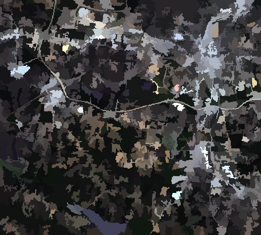

Guida rapida OTB¶
La libreria ORFEO Toolbox (OTB) è una libreria ad alte prestazioni per l’elaborazione delle immagini mirata al telerilevamento.
Questa Guida Rapida descrive come:
Ottieni informazioni sui metadati da un’immagine
Esegui operazioni matematiche tra bande di immagini
Apri le immagini raster con l’applicazione monteverdi, esegui la segmentazione (mean-shift clustering) e visualizza il risultato
Esegui la classificazione supervisionata basata sull’algoritmo Support Vector Machine
Le applicazioni OTB forniscono molti strumenti interessanti che facilitano la manipolazione delle immagini. Tutti questi strumenti sono disponibili attraverso:
CLI (interfaccia a riga di comando). Tutte le applicazioni possono essere chiamate da un terminale che inizia con otbcli_ più il nome dell’applicazione.
GUI (un’interfaccia grafica autonoma in Qt). Le applicazioni possono essere chiamate da un terminale con l’alias otbgui_ più il nome dell’applicazione. Un’altra opzione è usare un piccolo lanciatore (disponibile nella ).
Plugin QGIS - disponibile attraverso il framework di elaborazione.
- I dati di esempio usati in questa guida rapida possono essere trovati in :
/home/user/data/north_carolina/rast_geotiff
Avvia un Emulatore di Terminale (attualmente LXTerminal) dal menu Applicazioni nella sezione Accessori. In questo modo si ottiene un prompt di comandi della shell Unix. Vai alla directory dei dati.
cd /home/user/data/north_carolina/rast_geotiff
Contenuti
Visualizza le informazioni sui metadati in un’immagine¶
Puoi ottenere tutte le informazioni sui metadati contenute in un’immagine con il comando: otbcli_ReadImageInfo Il parametro unico è il nome del file immagine in ingresso, per esempio:
otbcli_ReadImageInfo -in ortho_2001_t792_1m.tif
Calcolatrice su bande di immagini¶
La funzione otbcli_otbBandMath fornisce un modo efficiente per eseguire operazioni matematiche sulle bande di immagini. La sintassi è abbastanza semplice. Per esempio, per substratizzare due bande per studiare le differenze di immagine sulle immagini lsat7_2002_10.tif e lsat7_2002_20.tif, basta usare il comando:
otbcli_BandMath -il lsat7_2002_10.tif lsat7_2002_20.tif -out ~/difference.tif -exp "im1b1-im2b1"
L’applicazione è in grado di eseguire complesse operazioni matematiche sulle immagini (soglia, ridimensionamento logaritmico, ecc.). Questa calcolatrice digitale fatta in casa è anche dotata di funzioni personalizzate che permettono di calcolare un’espressione completa. Per esempio, poiché le immagini di telerilevamento misurano valori fisici, è possibile estrarre diversi indici con significato fisico come l’NDVI (Normalized Difference Vegetation Index) per la vegetazione. Con la calcolatrice sei in grado di calcolare l’NDVI su immagini di sensori multispettrali facendo:
otbcli_BandMath -il lsat7_2002_30.tif lsat7_2002_40.tif -out ~/ndvi.tif -exp "ndvi(im1b1,im2b1)"
Il file lsat7_2002_30.tif corrisponde al canale rosso di Landsat 7, lsat7_2002_40.tif corrisponde al Near Infra-Red.
Puoi poi visualizzare le immagini in ingresso e il risultato con il comando
monteverdi lsat7_2002_30.tif lsat7_2002_40.tif ~/ndvi.tif
Classificazione basata sui pixel¶
La classificazione nel framework dell’applicazione fornisce una catena di classificazione supervisionata pixel-wise basata sull’apprendimento da più immagini e utilizzando un metodo di apprendimento automatico specificato come SVM, Bayes, KNN, Random Forests, Artificial Neural Network e altri. Vedi l’aiuto dell’applicazione TrainImagesClassifier per ulteriori dettagli su tutti i classificatori disponibili. Supporta immagini enormi attraverso lo streaming e il multi-threading. La catena di classificazione esegue una fase di allenamento basata sulle intensità di ogni pixel come elementi. Nota che tutte le immagini in ingresso devono avere lo stesso numero di bande per essere comparabili.
Per scoprire questa applicazione, puoi usare il comando
otbgui_TrainImagesClassifier
Perform segmentation¶
L’applicazione OTB Segmentation permette di produrre un risultato di segmentazione raster con diversi algoritmi e di scalare fino a grandi raster producendo output vettoriali che è possibile importare in un software GIS. Ci sono quattro metodi di segmentazione disponibili nell’applicazione:
Mean-Shift
Spartiacque (implementazione ITK)
Connected-Components
Morphological profiles
Puoi testare la segmentazione con questi comandi:
Creazione di un’immagine multicanale Red-Green-Blue-Nir
otbcli_ConcatenateImages -il lsat7_2002_30.tif lsat7_2002_20.tif lsat7_2002_10.tif lsat7_2002_40.tif -out ~/lsat7_rgbn.tif
Applica la segmentazione
otbcli_Segmentation -in ~/lsat7_rgbn.tif -filter meanshift -mode raster -mode.raster.out ~/segmentation.tif
Genera colori invece di etichette
otbcli_ColorMapping -in ~/segmentation.tif -out ~/segmentation_colored.tif -method image -method.image.in ~/lsat7_rgbn.tif
Inoltre, l’applicazione può funzionare in due modi diversi:
Modalità raster: permette di segmentare una piccola immagine e produce un raster dove ogni componente della segmentazione è etichettato con un numero intero unico
Modalità vettoriale: segmenta immagini più grandi e produce un file vettoriale dove ogni segmento della segmentazione è rappresentato da un poligono

OTB include anche un framework per eseguire la segmentazione tile-wise di immagini molto grandi con garanzie teoriche di ottenere risultati identici a quelli senza tiling chiamato LSMS.
OTB in QGis¶
Lo stesso set di applicazioni OTB può anche essere usato dal menu in QGis. Le applicazioni sono ordinate per tag.

Sviluppa con OTB¶
Se vuoi usare la libreria OTB e compilare il tuo codice C++ all’interno di OSGeoLive, dovrai farlo:
Installa il pacchetto di sviluppo libotb-dev e libqt4-dev .
Controlla che cmake sia installato.
La posizione OTB_DIR dovrebbe essere trovata automaticamente (di solito in /usr/lib/x86_64-linux-gnu/cmake/OTB-…). Nella tua configurazione di CMake, dovresti collegare le librerie nella variabile OTB_LIBRARIES.
Maggiori informazioni possono essere trovate nella Guida al software.
E ora?¶
Guida Software OTB
La principale fonte di informazioni è la OTB Software Guide. Si tratta di una guida completa che comprende circa 600 pagine, che descrive in dettaglio i passi per installare OTB e usarlo. La maggior parte delle classi disponibili sono pesantemente illustrate con risultati di reali elaborazioni di telerilevamento.
OTB CookBook
È inoltre disponibile una guida per OTB-Applications e Monteverdi dedicata ai non sviluppatori. Questa guida è composta da un breve tour di OTB-Applications e Monteverdi, seguito da una serie di ricette per eseguire le usuali attività di telerilevamento con entrambi gli strumenti.
Tutorial OTB
Segui i tutorials per saperne di più su OTB.
Documentazione sulle applicazioni OTB
Vedi anche la documentazione dettagliata sulle applicazioni OTB
Corsi OTB con immagini Pleiades per imparare a usare le applicazioni OTB e Monteverdi
Segui i corsi per saperne di più su OTB (vedi sezione Tutorials).